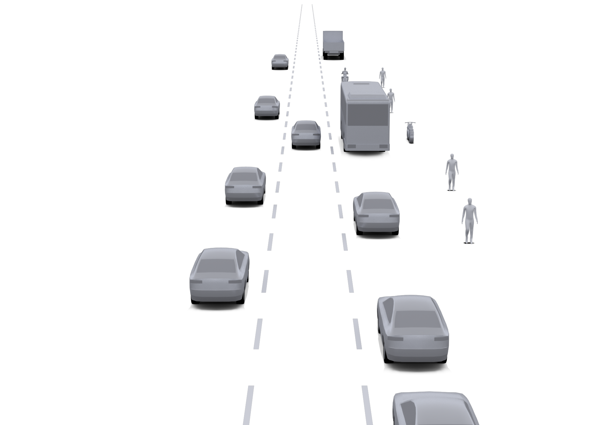
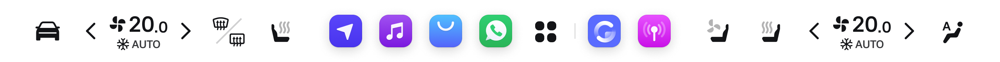

Design v2
Design v2
차곡 · 운전 노고 정산 · Connect-S 17″ 2560 × 1440 · Nogo 컬러 v4 · 노고 카 v3 코나(이 아티팩트가 기준) · 노고 정산 PRD v1.3
캔버스
프로토타입
디자인 시스템
함께 보기
앱 1개 1700
앱 2개 840
주간
야간
주석
누를 곳 표시
여백 선
화면 틀 가이드 ↗
Legacy(안 쓰는 화면 · 옛 로고) ↗
← 뒤로
처음부터
1:1 보기
차 신호(Virtual Console 대신)
착석 4명 감지
주행 시작
도착 · 방식 A
앱 시작
네트워크 없음(켜기/끄기)
좌석 센서 오류
미리보기 실패
미리보기 · 지원 안 하는 지역
휴게소에서 앱 다시 열기
도착 · 중간 정산 뒤(A)
출발 · 내비로 못 보냄(다음 1번)
도착 · 너무 늦게 엶(정리하지 못함)
도착 · 날씨·정체 못 받음
시연 모드(켜기/끄기)
도착 · 눈 오는 날
도착 · 맑은 낮 1시간 · 2명
도착 · 10분 · 2명(제안 없음)
도착 · 혼자

11:29
1660 × 1144
800 × 1144
800 × 1144
